Explore Kraków
A Brief History
Kraków served as the capital of Poland until 1596 and houses Wawel Castle and cathedral above the Vistula River. The medieval market square and St. Mary's Basilica survived wartime destruction that devastated Warsaw. German occupation from 1939 to 1945 included persecution in the Jewish quarter of Kazimierz. The historic center was inscribed as a UNESCO World Heritage site in 1978.
Attractions Map
Top Sights & Activities
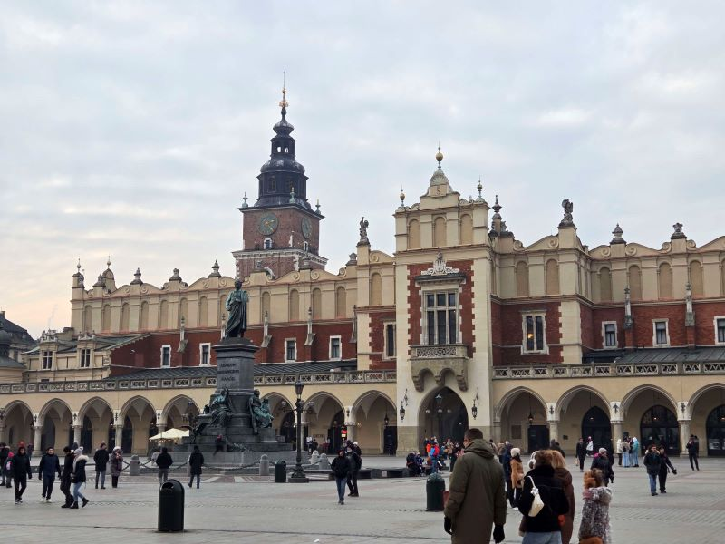
MNK Sukiennice
The Gallery of 19th-Century Polish Art at Sukiennice, is a division of the National Museum, Kraków, Poland. The gallery is housed on the upper floor of the Renaissance Sukiennice Cloth Hall in the center of the Main Market Square in Old Town Kraków. The gallery holds the largest permanent exhibit of 19th-century Polish painting and sculpture, in four grand rooms.
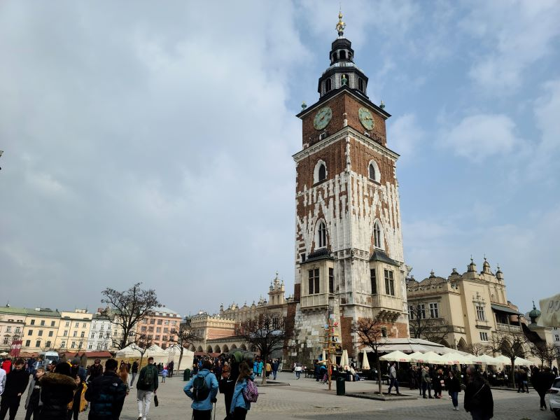
Town Hall Tower
Town Hall Tower is one of the main focal points of the Main Market Square in the Old Town of Kraków, Poland. The Tower is the only remaining part of the old Kraków Town Hall, demolished in 1820 as part of the city plan to open up the Main Square. Its cellars once housed a city prison with a medieval torture chamber.
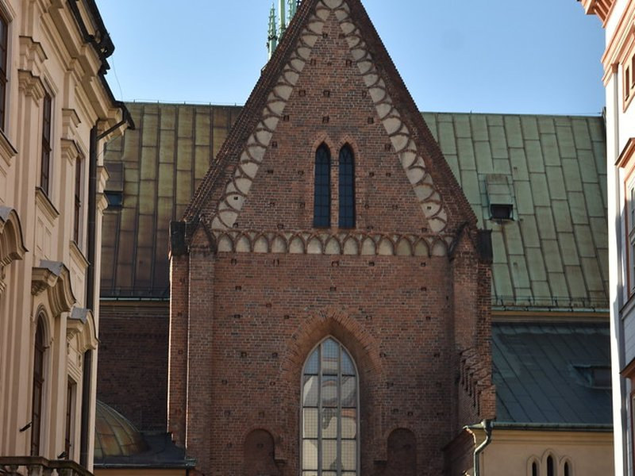
Basilica of St. Francis of Assisi
The Church of St. Francis of Assisi and Friary of the Conventual Friars Minor located in the Old Town district of Kraków, Poland, are a Roman Catholic religious complex on the west side of All Saints Square at Franciszkańska 2, across the street from the Bishop's Palace in Krakow – which served as the residence of Pope John Paul II during his stays in the city. The Church dates back to the 13th century.
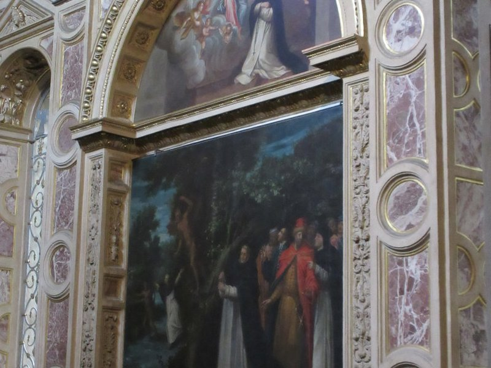
Holy Trinity Church
The Church of the Holy Trinity, known colloquially as the Brothers Hospitallers of Saint John of God Church is a historic Roman Catholic conventual and hospital church of the Brothers Hospitallers of Saint John of God located at 48 Krakowska Street in Kazimierz, the former district of Kraków, Poland.
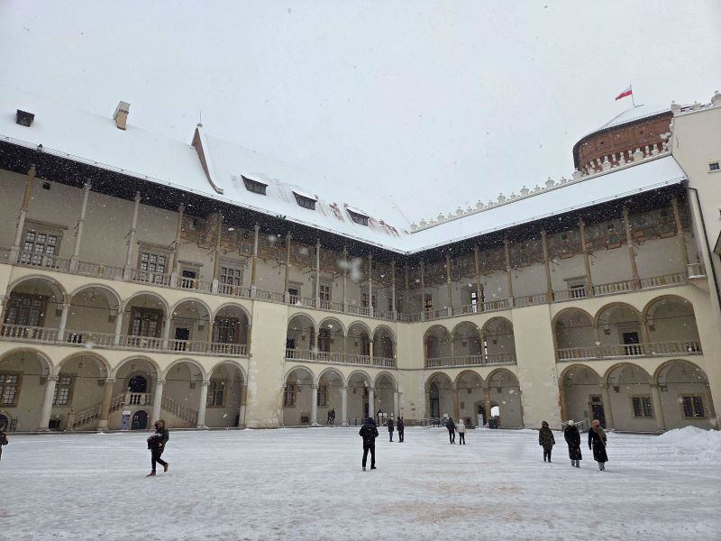
Wawel Royal Castle
The Wawel Royal Castle and the Wawel Hill on which it sits constitute the most historically and culturally significant site in Poland. A fortified residency on the Vistula River in Kraków, it was established on the orders of King Casimir III the Great and enlarged over the centuries into a number of structures around a Polish Renaissance courtyard. It represents nearly all European architectural styles of the Medieval, Renaissance and Baroque periods.
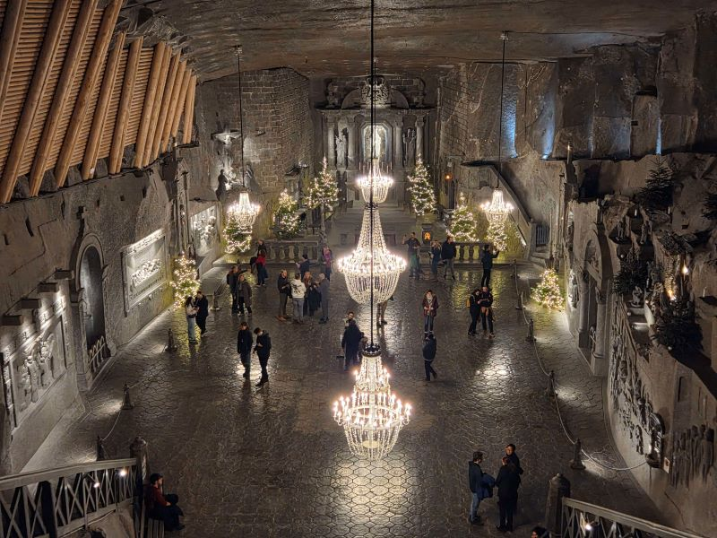
Wieliczka Salt Mine
The Wieliczka Salt Mine is a salt mine in the town of Wieliczka, near Kraków in southern Poland. From Neolithic times, sodium chloride was produced there from the upwelling brine. The Wieliczka salt mine, excavated from the 13th century, produced table salt continuously until 1996, as one of the world's oldest operating salt mines.
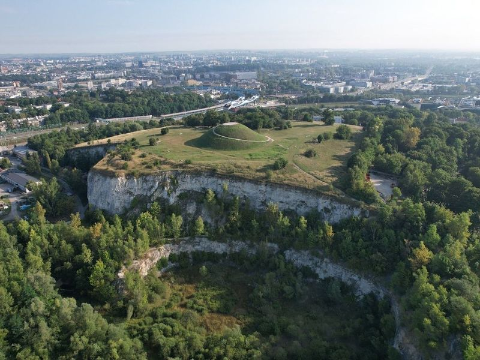
Krakus Mound
Krakus Mound, located in Krakow, Poland, is the oldest and largest prehistoric mound in the country. It offers panoramic views of the cityscape and is a popular spot for locals to gather during warmer months for barbecues and sunset watching. The mound has a rich history linked to mythical founder King Krakus and dates back as far as 500 BC based on research conducted in the 1930s. Positioned 2.
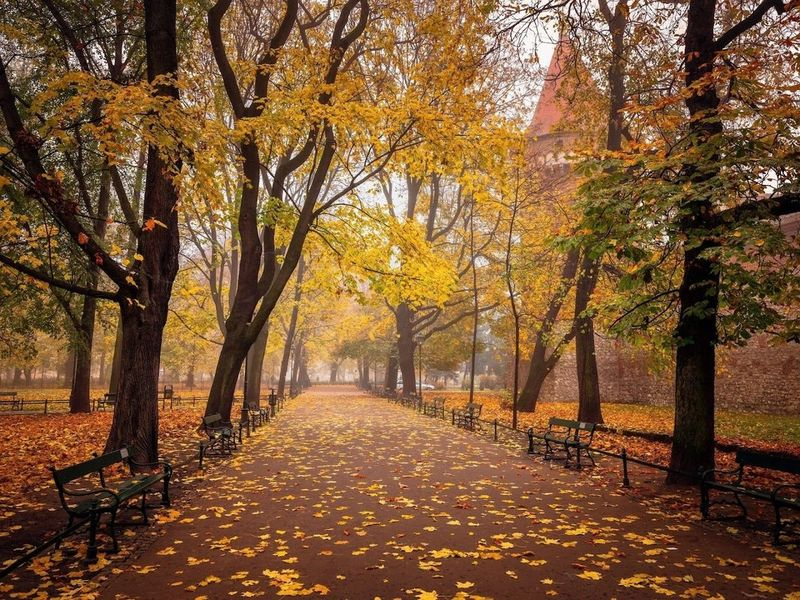
Planty
Planty Park is a 4-kilometer stretch of gardens that encircles the historic center of Kraków, offering a serene escape amidst the city's vibrant atmosphere. This lush green belt not only showcases beautiful walkways lined with trees and lawns but also serves as a reminder of the medieval moat and fortifications that once protected this area.
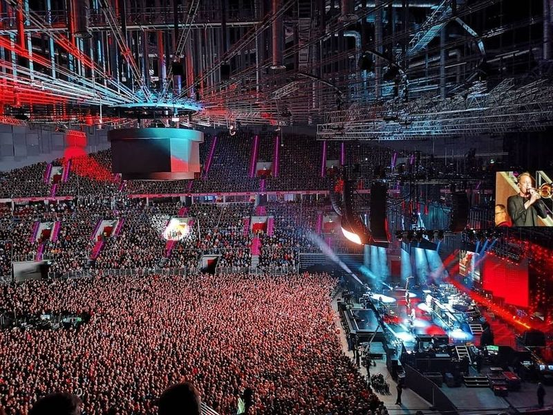
Tauron Arena
TAURON Arena Krakow, located approximately 80km from Krakow, is a prominent European centre for music, honoring the legacy of Krzysztof Penderecki, a renowned figure in modern Polish music. Alongside its primary focus on promoting musical excellence among young artists, this versatile venue has also hosted various sporting events such as badminton, boxing, curling, acrobatics, football, basketball, figure skating, martial arts, table tennis tennis and athletics.
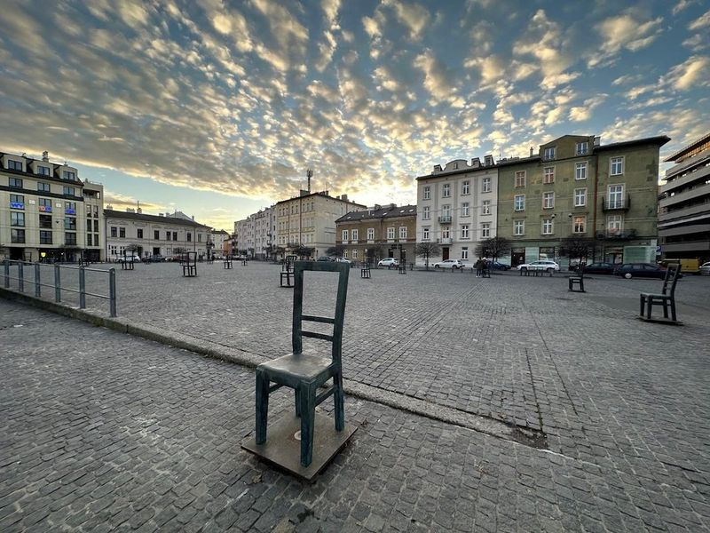
Ghetto Heroes Square
The memorial of 33 bronze chairs, which symbolizes the prisoners in the Krakow ghetto, is a controversial landmark in the Podgorze district. The site is catalogued as a historical landmark. Ghetto Heroes Square is listed among principal sites for Kraków within Poland.
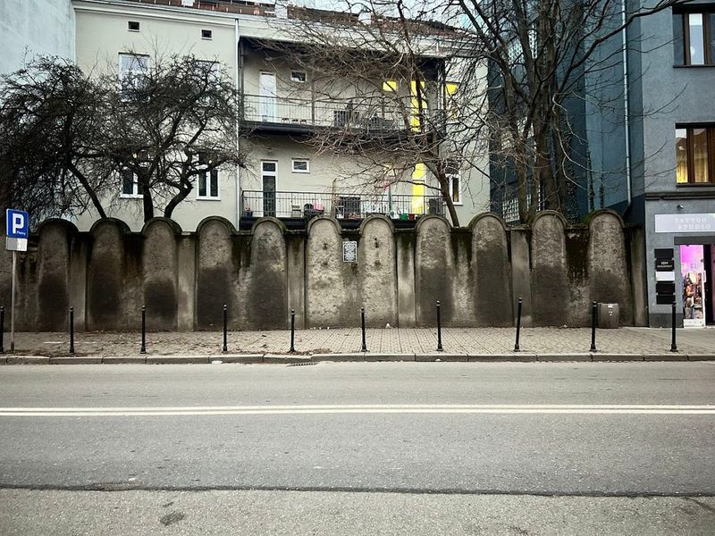
Remains of the Ghetto wall
The Remains of the Ghetto wall in Krakow is a poignant reminder of the city's dark history during World War II. This stone wall, built in 1941, once enclosed the Krakow ghetto and now stands as a memorial to the thousands of Jews who were confined within its boundaries. The area holds significant historical importance, with notable figures such as Wladyslaw Szpilman passing through it during the relocation of the Warsaw ghetto.
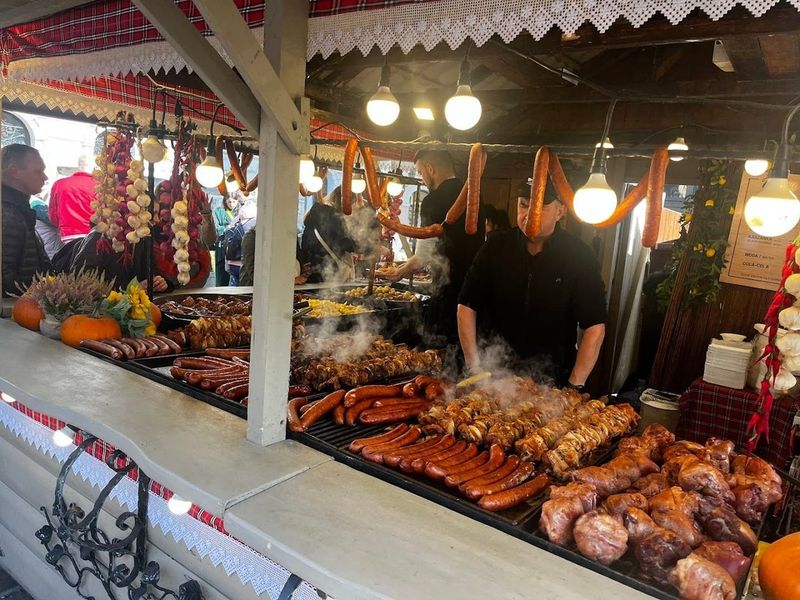
Little Market Square
Little Market Square, also known as Maly Rynek, has a rich history dating back to its origins as a butchers market in Krakow. In the 18th century, it transformed into a fruit and vegetable market. Today, it hosts the Saint Jozef's fair with colorful stalls offering original crafts and traditional food along with live music performances by local bands.
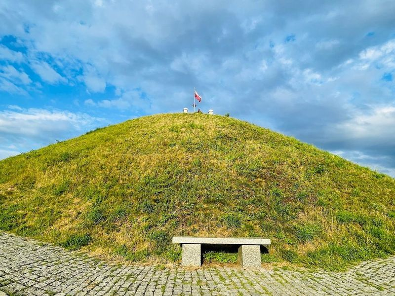
Kopiec Józefa Piłsudskiego
Józef Piłsudski's Mound is an artificial formation in Krakow, Poland, built between 1934 and 1937 to honor the Polish statesman Józef Piłsudski. Situated on Sowiniec Heights in Krakow's VII District 'Zwierzyniec,' this mound offers picturesque hiking trails leading to panoramic views of the city.
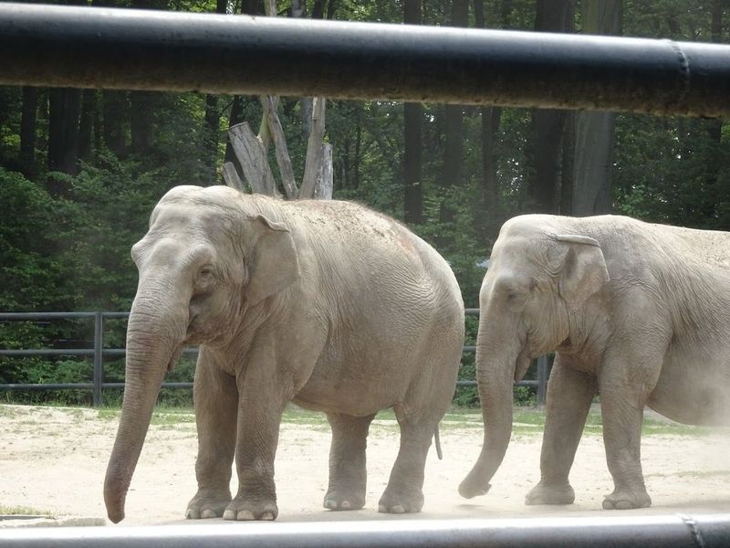
Kraków Zoo
Kraków Zoo is a compact yet diverse zoo located in the middle of the expansive 500-hectare Las Wolski forest, just ten kilometers west of Kraków's Old Town. The zoo houses over 1400 exotic animals, including 270 different species such as Rothschild's giraffe, pygmy hippo, little panda, snow leopard, Amur tiger, chimpanzee, Indian elephant and Humboldt penguin.
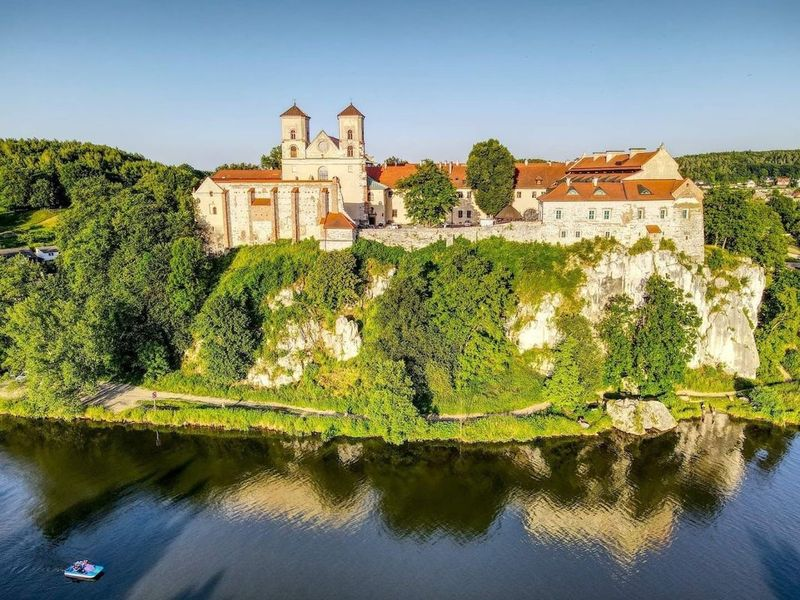
Benedictine Abbey in Tyniec
The Benedictine Abbey in Tyniec is a centuries-old monastery situated on a cliff with views of the Vistula River. The atmosphere exudes tranquility and offers an array of monastery-made products such as alcoholic beverages, organic cakes, cheeses, breads, and ice creams. The monks cultivate their own ingredients and sell their divine creations in an on-site shop.
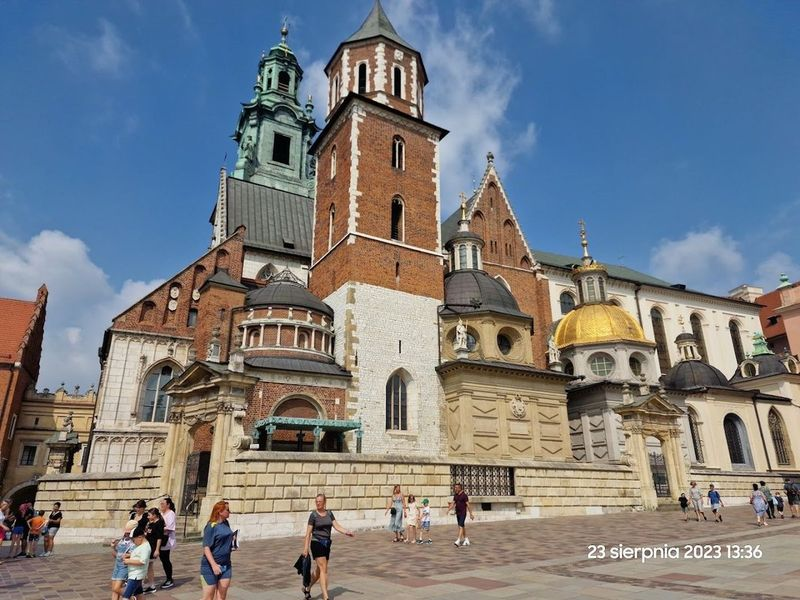
Wawel Cathedral
Wawel Cathedral, located in Cracow, is a significant site for Polish history and culture. It has been the coronation venue for Polish monarchs and is the resting place of numerous kings, national heroes, writers, and artists. The cathedral houses remarkable chapels such as the Holy Cross Chapel with Byzantine frescoes and works by renowned artists like Veit Stoss. Additionally, it features impressive Renaissance artwork in the Sigismund Chapel.
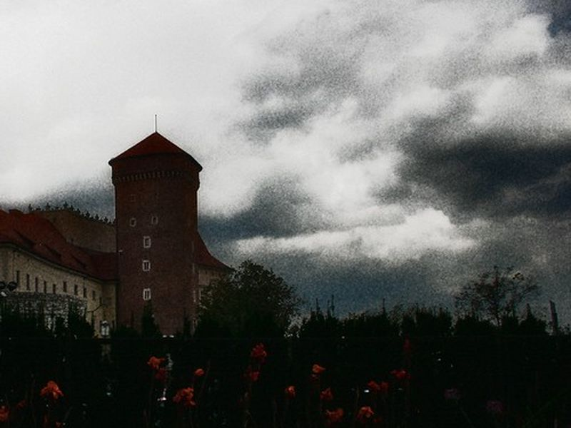
Smok Wawelski
A famous dragon statue located near Wawel Hill, symbolizing the legendary Wawel Dragon from Kraków's folklore. The site is catalogued as a tourist attraction. Smok Wawelski is listed among principal sites for Kraków within Poland. Municipal and regional heritage listings document its place in the historic centre and visitor routes through Kraków.
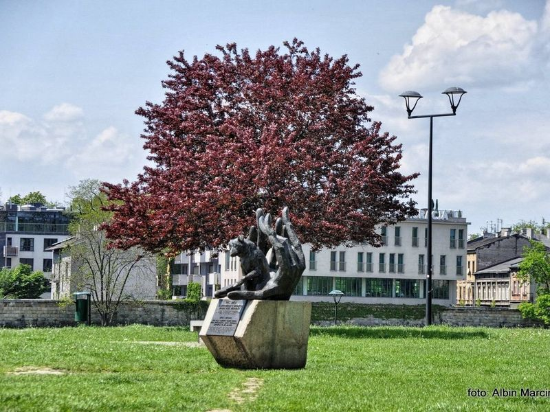
Dżok The Dog monument
Dżok The Dog monument is a touching tribute to a faithful black dog whose owner passed away near the Grunwaldzkie Roundabout. The monument, located between Grunwald Bridge and Wawel Castle, commemorates Dżok's unwavering loyalty as he waited for his deceased owner for an entire year. This finely crafted sculpture stands as a captivating symbol of the deep bond between humans and animals.
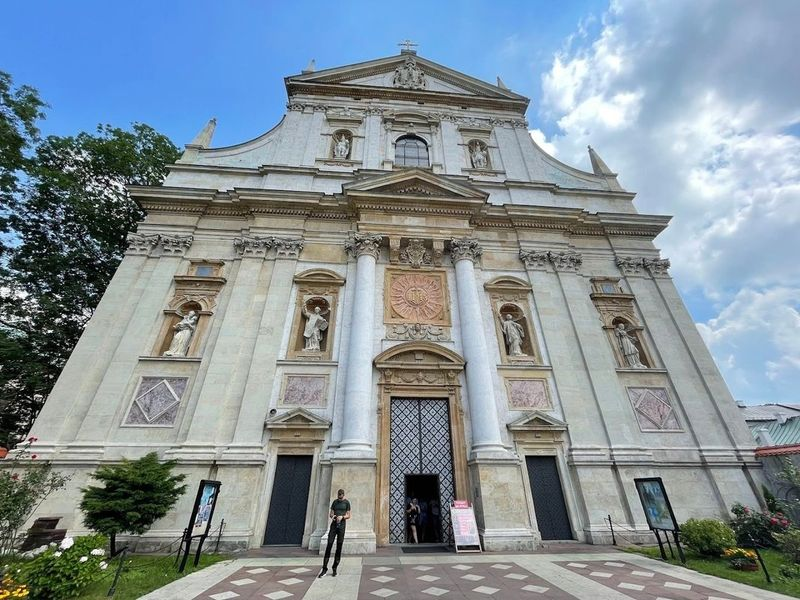
Saints Peter and Paul Church
In Krakow's Old Town, Saints Peter and Paul Church is a example of baroque architecture with Italian influences. Built between 1597 and 1619, it is the largest historic church in Krakow in terms of seating capacity. The church features an innovative facade design that sets it apart from traditional Polish Gothic architecture. Inside, travellers can admire ornate wooden altars, vibrant stained glass windows, and a beautifully crafted ceiling.
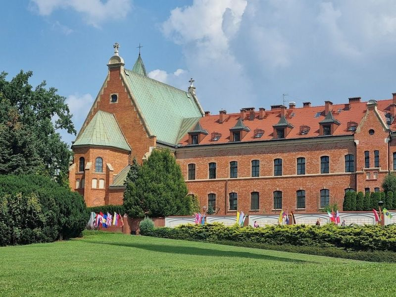
The Congregation of the Sisters of Our Lady of Mercy
Sanktuarium Bożego Miłosierdzia, also known as the Divine Mercy Sanctuary, is a Roman Catholic basilica located in Krakow, Poland. Unlike traditional baroque churches in the area, this contemporary church was completed in 2002 on the site of an older Gothic structure. It holds great significance as it is dedicated to Saint Maria Faustina and serves as her resting place. The shrine includes a chapel of divine mercy where St.
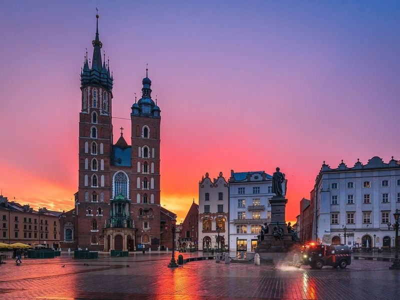
Rynek Główny
Rynek Główny, also known as the Main Market Square, is a large medieval town square with a rich history dating back to the 13th century. It is surrounded by impressive palaces and churches, including notable sites such as St. Mary's Basilica, the Town Hall Tower, and the Cloth Hall. Spanning 40,000 meters in size, it holds the title of being the largest medieval market in Europe.
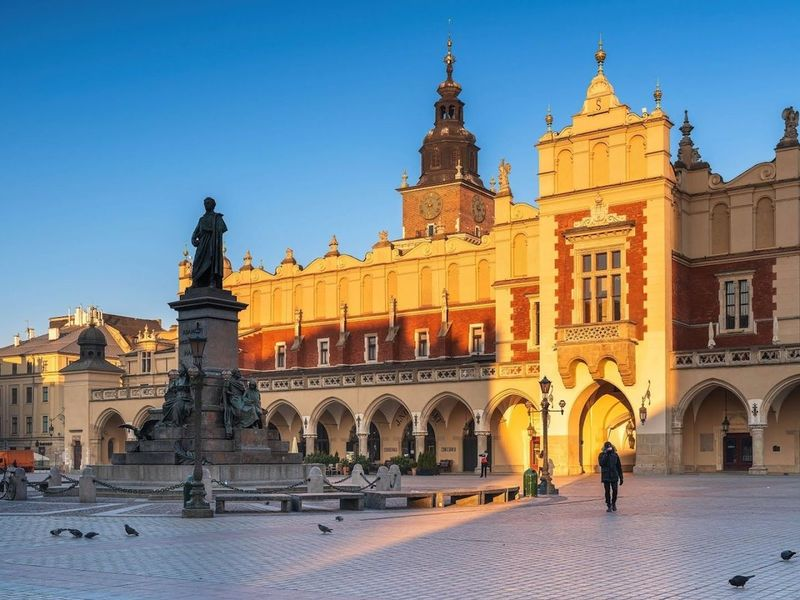
Adam Mickiewicz Monument
The Adam Mickiewicz Monument in Kraków is a striking tribute to one of Poland's most revered poets, unveiled in 1898. Nestled in the bustling Main Market Square, this impressive bronze statue captures the essence of Mickiewicz, celebrated for his romantic poetry and hailed as a national hero. As part of the esteemed group known as the Three Bards, he penned significant works like 'Pan Tadeusz,' which holds a special place in Polish literature.
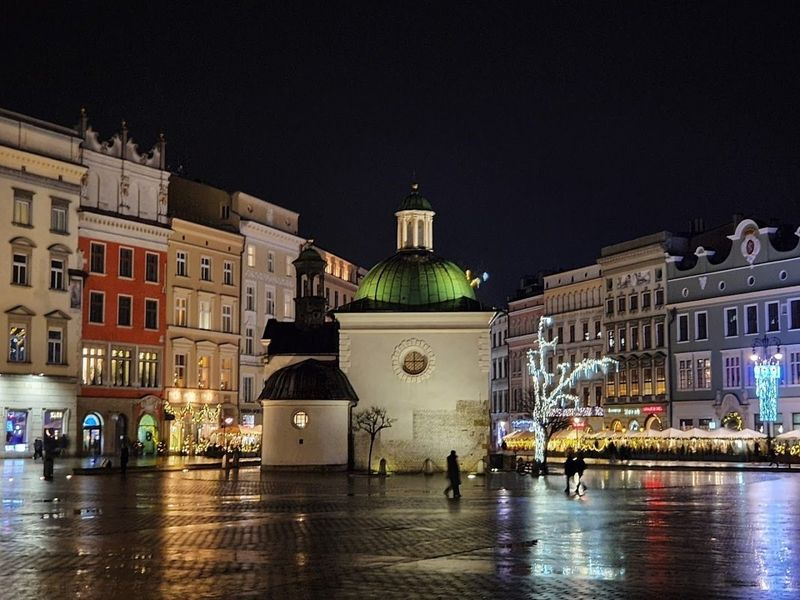
Church of St. Wojciech
The Church of St. Wojciech is an impressive Romanesque church that dates back to the 11th century and boasts a striking Baroque dome. Situated in a bustling square, it is surrounded by various points of interest, including street entertainers and the charming Church of St. Adalbert. This historic site is one of Poland's oldest stone structures and represents early Christian, Romanesque architecture.
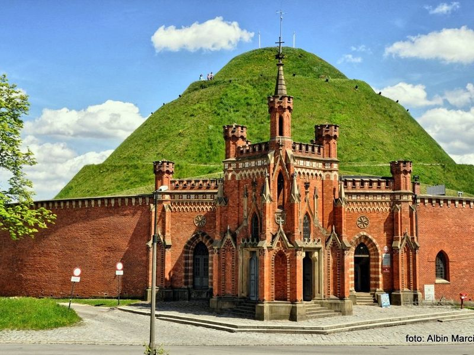
Kopiec Kościuszki
Kościuszko Mound is an artificial hill constructed in 1820 to honor Tadeusz Kosciuszko, a revered military figure in Poland's history. The mound also serves as the final resting place for Kosciuszko. From its summit, travellers can enjoy views of Krakow and the Beskid Zywiecki mountain range. This site has become popular among couples for wedding photoshoots due to its romantic ambiance and picturesque backdrop.
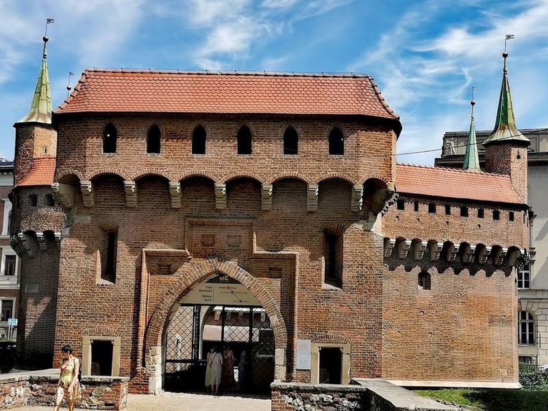
Kraków Barbican
Kraków Barbican, a 15th-century defense gateway once connected to the city walls, is now part of the Historical Museum. This redbrick keep with seven spiked turrets and formidable crenulations stands as an impressive remainder of the fortification walls that once encircled the royal city. The gatehouse was originally linked to the Old Town by a wooden bridge, which would be burned in case of an attack.
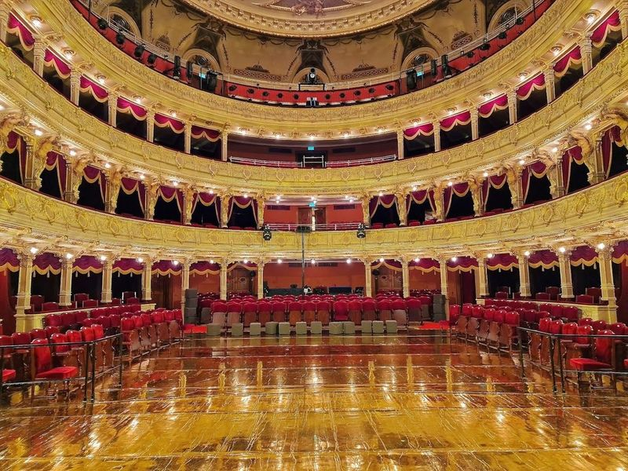
Teatr im. Juliusza Słowackiego w Krakowie
The Juliusz Słowacki Theatre is a historic 19th-century venue known for staging concerts, theatrical performances, and other events. The theater showcases baroque and eclectic architecture, including the former power plant and fire brigade building resembling a castle. It's considered the birthplace of modern Polish theater and has been hosting plays since its debut in the late 19th century.
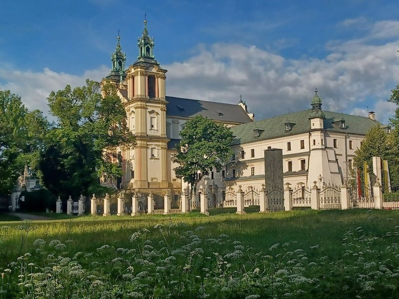
Basilica of St. Michael the Archangel
The Basilica of St. Michael the Archangel is an 18th-century Catholic church and religious sanctuary adorned with baroque decor and a burial crypt. It was built in the 17th century by Zofia Wieniawska's generosity, designed by Michal Link, and features a single nave with barrel vaulting supported by doubled Ionic pilasters.
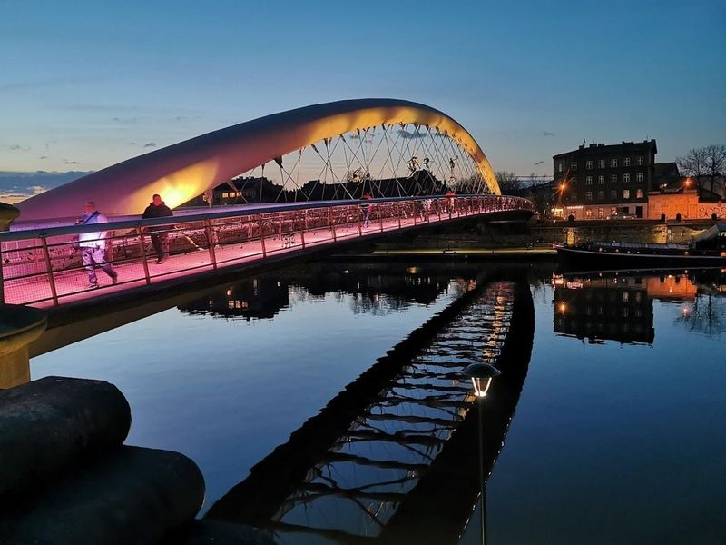
Father Bernatek’s Bridge
Father Bernatek’s Bridge, also known as the Love Lock Bridge, is a pedestrian crossing that elegantly links Krakow's historic Kazimierz district with the lively Podgorze neighborhood. Completed in 2010, this modern architectural gem spans the Vistula River and has quickly become a favorite among locals and tourists alike. What truly sets it apart are the acrobatic sculptures created by artist Jerzy Kędziora, which were added in 2016.
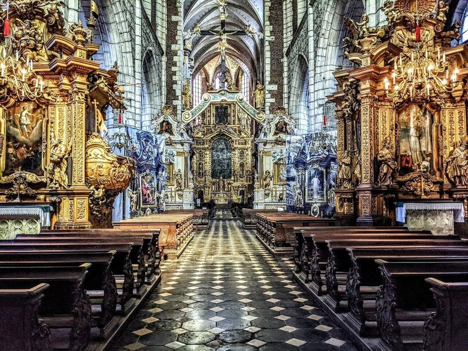
Corpus Christi Basilica
The Corpus Christi Basilica, located in the Kazimierz district of Krakow, is a example of Polish Gothic architecture. Built in the 14th century and restored after the Swedish invasion, it features a mix of Gothic and Baroque styles. The basilica is known for its ornate interior and houses the remains of Bartolommeo Berrecci. It stands as temples in Krakow and is considered beautiful by many travellers.
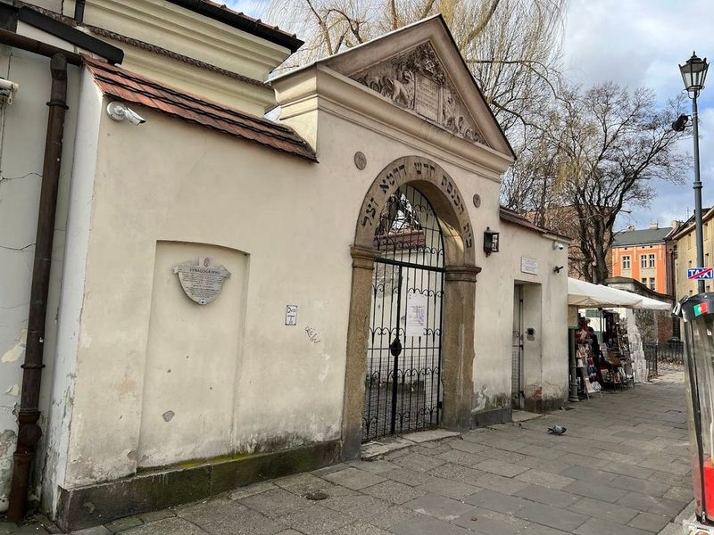
Remuh Synagogue
The Remuh Synagogue, dating back to the 16th century, is one of the oldest synagogues in the city and is located in the Kazimierz district. Along with other Jewish temples in the area, it represents various architectural styles and has been recognized as a UNESCO World Heritage site. The synagogue and cemetery are situated in Szeroka Square, where travellers can explore and attend Shabbat services.
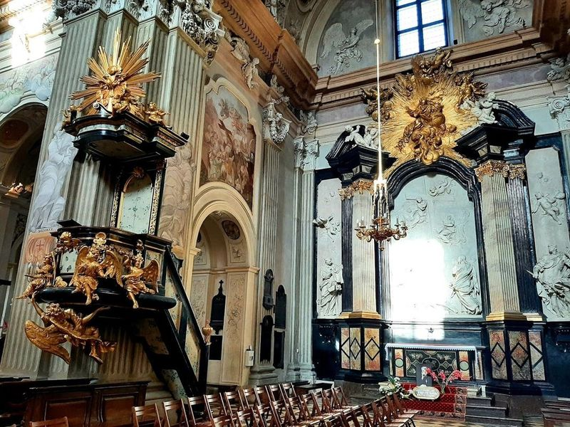
Church of St. Anne
Nestled in the heart of Krakow's historic district, the Church of St. Anne stands as a testament to Polish Baroque architecture. Completed in 1703 and designed by Tylman van Gameren, this magnificent church features exquisite gilded angel sculptures, intricate reliefs, and a painted ceiling that captivates travellers. While its roots trace back to the 14th century, it has been meticulously restored after suffering damage from fire.
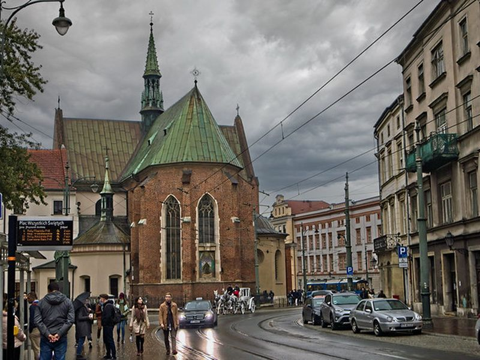
Plac Wszystkich Świętych
The site is catalogued as a tourist attraction. Plac Wszystkich Świętych is listed among principal sites for Kraków within Poland. Municipal and regional heritage listings document its place in the historic centre and travellers routes through Kraków.

Lustrzany Labirynt
The site is catalogued as a tourist attraction. Lustrzany Labirynt is listed among principal sites for Kraków within Poland. Municipal and regional heritage listings document its place in the historic centre and travellers routes through Kraków. The site is catalogued as a tourist attraction.
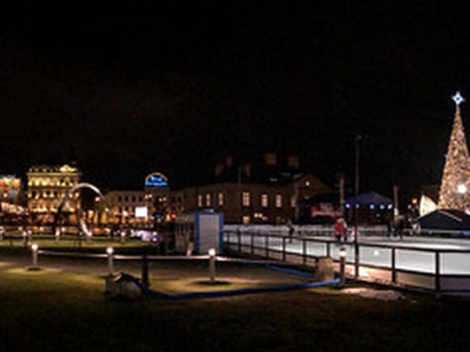
Plac Jana Nowaka-Jeziorańskiego
The site is catalogued as a tourist attraction. Plac Jana Nowaka-Jeziorańskiego is listed among principal sites for Kraków within Poland. Municipal and regional heritage listings document its place in the historic centre and visitor routes through Kraków.
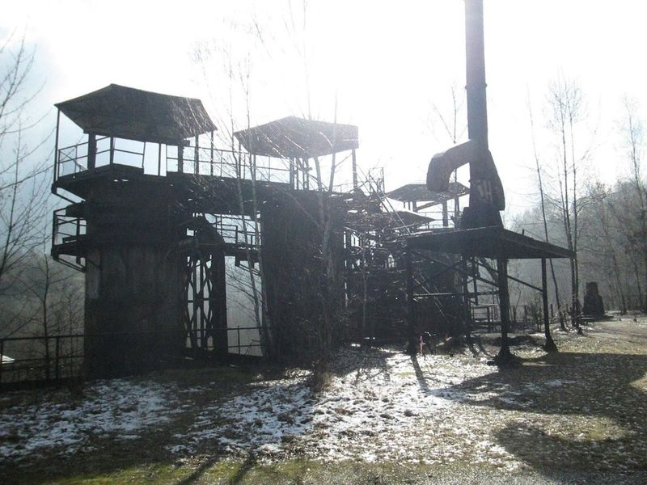
Site of the German Nazi concentration camp Plaszow
Krakow-Płaszów Concentration Camp was a concentration camp located in the outskirts of Krakow, Poland. It was established by the Nazis in 1940 and was and most infamous camps of them all. Today, it is a site of contemplation, reflection and learning - its not unusual to feel shaken after visiting. Treat the site with respect.
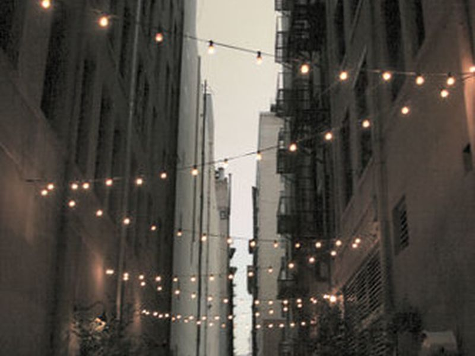
Lost Souls Alley
Located near the vibrant heart of Kraków, Lost Souls Alley is an interactive haunted house experience that challenges visitors to navigate dark corridors while solving puzzles. Blending elements of an escape room with intense theatrical scares, it requires teamwork to progress through the spine-chilling scenarios. The attraction offers multiple intensity levels for different groups.
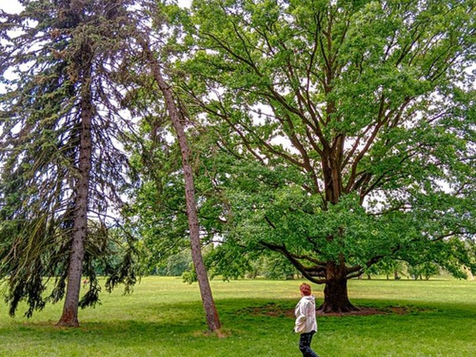
Henryk Jordan Park
Established in 1889, Henryk Jordan Park was the first public park of its kind in Europe designed specifically to promote youth physical education. The expansive green space in Kraków features winding trails, sports fields, paddle boats, and monuments dedicated to notable Polish historical figures. It remains a tranquil urban retreat favored by locals for recreation.
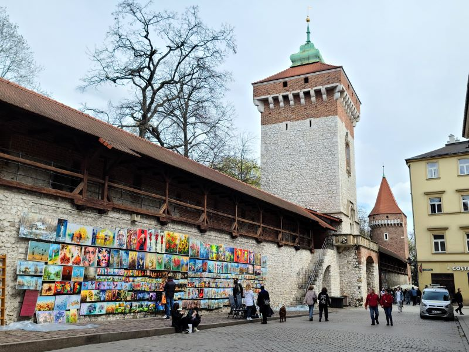
St. Florian's Gate
St. Florian's Gate in Kraków, Poland, is one of the -known Polish Gothic towers, and a focal point of Kraków's Old Town. It was built about the 14th century as a rectangular Gothic tower of "wild stone", part of the city fortifications against Mongol attack.
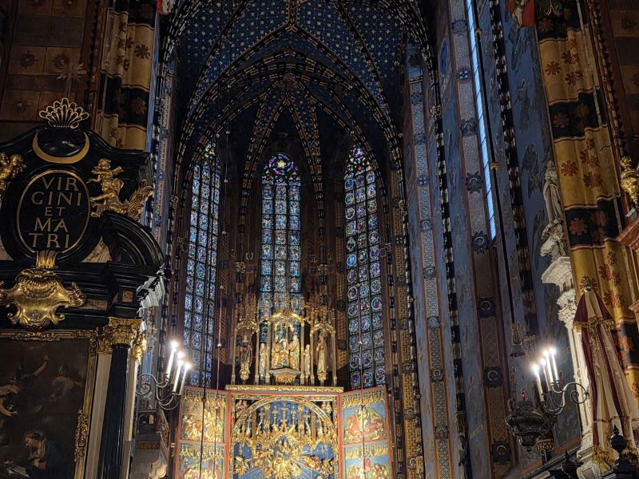
St. Mary's Basilica
The Church of the Assumption of the Blessed Virgin Mary, known colloquially as the St. Mary's Church, is a historic Roman Catholic parish church located at Mariacki Square at the north-eastern corner of the Main Market Square in the Old Town of Kraków, Poland. It is a Brick Gothic church.
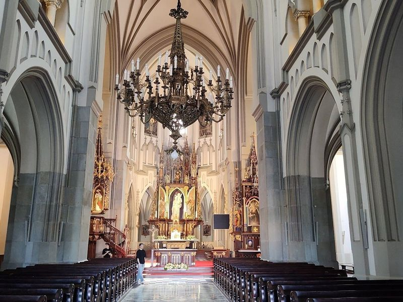
St. Joseph's Church
St. Joseph's Church is a striking Neo-Gothic church situated in the Podgorze district of Krakow, Poland. Constructed in the early 1900s, it stands out as remarkable churches in the city. The church boasts an imposing brick facade and a towering 80-meter spire, making it a prominent landmark visible from different areas of Krakow.